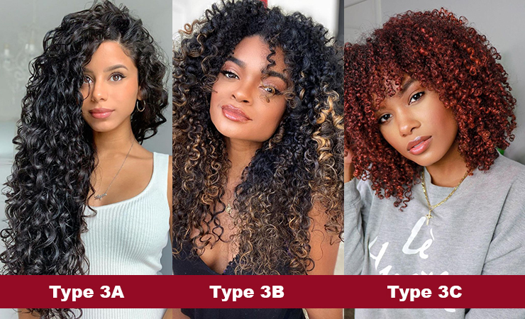

Curly Hair Types
Type 2A, 2B, 2C: Wavy Hair

Type 2 hair has a loose, tousled S-shaped pattern.It includes three subtypes:2A,2B,2C
Type 2A
2A hair has well-defined, dense curls with an "S" pattern. It may have a visible curl pattern.
Type 2B
2B hair has well-defined, dense curls with an "S" pattern. It may have a visible curl pattern.
Type 2C
2C hair has well-defined, dense curls with an "S" pattern. It may have a visible curl pattern.
Types 3A, 3B, 3C: Curly Hair
Type 3 hair is springy/loose curls to tight corkscrews. It includes three subtypes: 3A, 3B, and 3C.
Type 3A
3A hair has well-defined, dense curls with an "S" pattern. It may have a visible curl pattern.
Type 3B
3B hair has well-defined, dense curls with an "S" pattern. It may have a visible curl pattern.
Type 3C
3C hair has well-defined, dense curls with an "S" pattern. It may have a visible curl pattern.
Types 4A, 4B, and 4C: Coils
Type 4 hair is coily or kinky hair. It includes three subtypes: 4A, 4B, and 4C.
Type 4A
4A hair has well-defined, dense curls with an "S" pattern. It may have a visible curl pattern.
Type 4B
4B hair has a less defined curl pattern, forming tight, z-shaped curls. It may shrink more when dry.
Type 4C
4C hair has a more intricate curl pattern, with densely packed coils that may appear less defined. It can shrink significantly when dry.